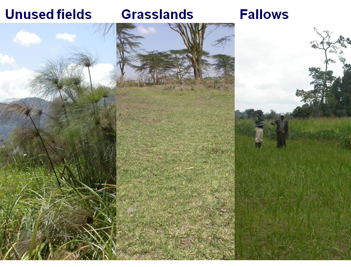
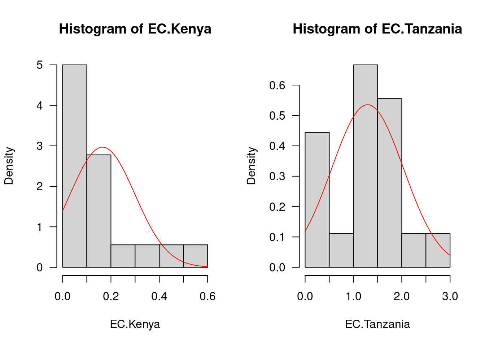

download.file(url = "https://kamapu.github.io/GrundkursR/Dateien/KursDateien.zip",
destfile = "KursDateien.zip", method = "curl")
unzip("KursDateien.zip", overwrite = TRUE)
unlink("KursDateien.zip")Einführung in die parametrischen Tests
Übung
Ein Workflow für die parametrische Statistik und das Testen von Hypothesen unter der Annahme der Normalverteilung.
Einführung
Lade die Daten ein…
Danach…
Boden <- read.csv("Africa.env.csv")Der Datensatz Boden enthält Beobachtungen von 36 Untersuchungsfeldern in vier Orten (zwei Orte in Kenia und zwei Orte in Tansania). Die Untersuchungsfelder sind in drei Landnutzungen unterteilt, nämlich “ungenutzte Flächen” (halbnatürliche Vegetation), “Weideland” und “Brachland” (lang- und kurzfristig aufgegebene Ackerflächen).

Zusätzlich zur Zugehörigkeit zu Land, Ort und Landnutzung enthält Boden die bodenchemischen Variablen für jede Fläche, nämlich den Gehalt an organischem Kohlenstoffgehalt (g kg-1), Gesamtstickstoffgehalt (g kg-1), pflanzenverfügbarer Phosphor (mg kg-1), austauschbares Kalium (cmol kg-1), elektrische Leitfähigkeit (dS m-1) und pH-Wert [@Kamiri2010].
Varianzanalyse
Die Varianzanalyse (Analysis of Variance, ANOVA) geht davon aus, dass die Variabilität von Messungen durch bestimmte Faktoren beeinflusst wird. Zusätzliche Effekte durch unbekannte Faktoren werden als zufällig (unsystematisch) betrachtet und als “experimentelle Fehler” bezeichnet. Für eine einfachen Erklärung betrachten wir die Wirkung eines einzigen Faktors (unabhängige Variable) auf eine abhängige Variable, die so genannte einseitige ANOVA. Um dieses Beispiel in einen wissenschaftlichen Kontext zu stellen, lautet unsere Frage lautet: Ist die elektrische Leitfähigkeit des Bödens von ihrem Herkunftsland abhängig? Oder mit anderen Worten ”Beeinflusst das Herkunftsland die elektrische Leitfähigkeit der Böden?“ Dann können wir eine Nullhypothese H0 formulieren: ”Die elektrische Leitfähigkeit von Böden ist nicht abhängig von ihrem Herkunftsland”. Die Alternativhypothese lautet H1: ”Die elektrische Leitfähigkeit ist abhängig vom Herkunftsland Herkunftsland ab und unterscheidet sich daher zwischen den Ländern”*.
Zur Durchführung der Varianzanalyse verwenden wir die Funktion aov(), die intern ein lineares Modell aufruft (Funktion ). Alternativ können Sie auch die Funktion anova() verwenden, aber dann können Sie vorher das lineare Modell anpassen.
ANOVA <- aov(EC ~ Country, data = Boden)
summary(ANOVA) Df Sum Sq Mean Sq F value Pr(>F)
Country 1 11.447 11.447 39.94 3.32e-07 ***
Residuals 34 9.745 0.287
---
Signif. codes: 0 '***' 0.001 '**' 0.01 '*' 0.05 '.' 0.1 ' ' 1Nach dem Ergebnis von aov() gibt es einen signifikanten Unterschied in der elektrischen Leitfähigkeit des Bodens zwischen den Ländern. Aber ist dieses Ergebnis gut genug? Die Varianzanalyse ist ein parametrischer Test, d. h., die Werte können innerhalb der Populationen (in diesem Fall verschiedene Länder) normalverteilt sein. Außerdem können die Varianzen zwischen den verglichenen Populationen homogen verteilt sein verteilt sein (Homoskedastizität).
Test auf Normalverteilung
Bevor wir mit der Prüfung der Normalität beginnen, sehen wir uns eine grafische Übersicht über die Verteilung der Werte für die Variable elektrische Leitfähigkeit. Dazu teilen wir zunächst die Variable nach Herkunftsland auf und überprüfen dann deren Histogramme.
## Leitfähigkeit der Bodenproben aus Kenia
EC.Kenya <- subset(Boden, Country == "Kenya")$EC
## Leitfähigkeit der Bodenproben aus Tansania
EC.Tanzania <- subset(Boden, Country == "Tanzania")$EC
## Histogramme
par(mfrow=c(1,2), las = 1)
## Leitfähigkeit der Bodenproben aus Kenia
hist(EC.Kenya, freq = FALSE)
curve(dnorm(x, mean = mean(EC.Kenya), sd = sd(EC.Kenya)), col = "red", add = TRUE)
## Leitfähigkeit der Bodenproben aus Tansania
hist(EC.Tanzania, freq = FALSE)
curve(dnorm(x, mean = mean(EC.Tanzania), sd = sd(EC.Tanzania)), col = "red", add = TRUE)
Um die Sache zu vereinfachen, können wir alternativ die Verteilung der Residuen in den Modellen überprüfen. Hier werden wir eine zusätzliche grafische Option verwenden, die die Abweichung der beobachteten Verteilung von einer theoretischen Normalverteilung, nämlich den normalen Quantil-Quantil-Plot (Q-Q-Plot).
## Residuen
Residuals <- resid(ANOVA)
par(mfrow = c(1, 2), las = 1)
hist(Residuals, freq = FALSE, col = "grey")
curve(dnorm(x, mean = mean(Residuals), sd = sd(Residuals)), col = "red", add = TRUE)
qqnorm(Residuals, asp = 1)
qqline(Residuals, lty = 2)
Was ist Ihre Meinung? Ist die Verteilung der Residuen eine Normalverteilung? Während einige Autoren eine visuelle Beurteilung als ehrliche Alternative empfehlen, um zu entscheiden, ob die Verteilung als normal anzusehen ist oder nicht, raten andere Autoren, dass eine visuelle Beurteilung einen Test nicht ersetzen kann.
Um die Normalverteilung von Werten zu überprüfen, haben wir unter anderem zwei Alternativen, den Kolmogorov-Smirnov-Test (Funktion ks.test()) und den Shapiro-Wilk Test (Funktion shapiro.test()). In dieser Sitzung werden wir die zweite Option [für Anwendungen von `ks.test()`, siehe @Dormann2011].
shapiro.test(Residuals)
Shapiro-Wilk normality test
data: Residuals
W = 0.90258, p-value = 0.004017Beim Shapiro-Wilk-Test lautet unsere Nullhypothese H0: “Die Verteilung der Residuen unterscheidet sich nicht von einer Normalverteilung”. Unter Berücksichtigung eines Konfidenzintervalls von 95% werden wir signifikante Unterschiede feststellen, wenn der p-Wert kleiner oder gleich 5% ist (P < 0,05), was in diesem Beispiel der Fall ist.
Tests auf Homoskedastizität
Die zweite Voraussetzung für eine ANOVA ist eine homogene Verteilung der Varianzen zwischen den Populationen (Homoskedastizität). Wie im vorherigen Beispiel werden wir suchen wir zunächst nach einer grafischen Option, in diesem Fall ein Boxplot der elektrischen Leitfähigkeit nach Land.
boxplot(EC ~ Country, data = Boden, col = "grey")